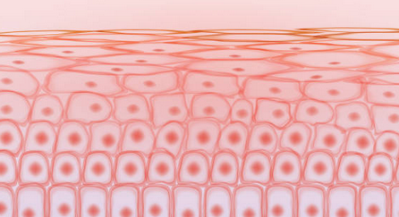

Strong And Weak Subjects

MATHS
I enjoy math because it satisfies my curiosity about patterns and logic, making it feel like solving puzzles. The clear steps and definite answers are really satisfying. Math helps me solve everyday problems with useful applications. Tackling hard problems builds my persistence and resilience. Interactive apps and real-world examples keep learning fun. Plus, math improves my critical thinking and connects to other subjects like science and technology, showing its importance in daily life. This is why i enjoy mathematics a lot.
SOCIAL
Social subjects are challenging for me because they involve a lot of reading, memorization, and understanding complex theories. The volume of information is overwhelming, and making connections is difficult. Unlike logical problem-solving subjects, social studies require interpreting qualitative data, which feels subjective and harder to grasp. This makes it tough to stay engaged and confident.
To improve in social subjects, I'll identify problem areas, set goals, and use textbooks, online resources, and summaries. I'll dedicate 30-60 minutes daily to focused reading and note-taking, review progress weekly, and connect historical events to current ones. Regular quizzes will help track progress. Staying positive and believing in my ability to improve with consistent effort is key.
Interesting lessons I've learnt this year
MATHS
Statistics
"Statistics" might sound like number overload, but it's like detective work with data! This chapter teaches us to collect, analyze, and interpret information, turning boring numbers into fascinating clues that reveal hidden patterns. Statistics helps us understand the world in new ways, like analyzing sports performances, predicting weather, and making informed decisions in medicine, economics, and social sciences. It empowers us to make sense of surveys, research, and reports, discern fact from fiction, and contribute to informed discussions. Statistics isn't just about numbers; it's about turning data into meaningful insights to understand the world better!
SCIENCE
Chemistry - Is Matter Around Us Pure?
The chapter "Is Matter Around Us Pure?" is a game changer! It introduces the basics of classifying substances into mixtures and pure substances, essential for understanding the molecular world. You'll learn the difference between pure substances like distilled water and mixtures like seawater, which is crucial for grasping how the world works. This chapter also covers separation methods such as filtration, distillation, and evaporation, vital for purifying water and refining crude oil. These techniques provide insight into chemical reactions and industrial processes that impact daily life. Understanding purity and mixtures is the foundation for exploring complex chemical reactions, making this chapter a cornerstone of chemistry knowledge.
Physics - Sound
This chapter explains how sound works: vibrations create waves that travel through air, water, and solids, allowing us to hear music and voices. It covers concepts like frequency and amplitude, which determine pitch and volume. You'll also explore practical applications like ultrasound in medicine and noise-canceling technology. Understanding sound unlocks its potential in music, communication, engineering, and medicine, making this chapter a fascinating dive into auditory physics.

Biology - Tissues
"Tissues" explores how cells unite to form muscle, bone, and nervous tissues, crucial for movement, support, and sensation. This chapter delves into how tissues repair and regenerate, highlighting their role in biology and medical treatments, offering insights into the body's inner workings and adaptability.
SOCIAL
Comparative Colonization in India
The social studies chapter "Comparative Colonisation in India" is fascinating because it delves into the diverse impacts and strategies of different colonial powers in India, such as the British, French, Portuguese, and Dutch. This comparative analysis reveals how each power influenced India's political, economic, and cultural landscape uniquely. By examining their varied approaches to administration, trade, and local interactions, students gain a deeper understanding of how colonial rule shaped modern India’s complex history and societal structures. The chapter highlights the intricate dynamics of colonization and its lasting effects, making it a compelling study of historical influence and legacy.
Skills I've developed
- Critical Thinking skills: I Learned to analyze and evaluate information, arguments, and evidence more effectively.
- Time Management skills: I Developed the ability to prioritize tasks, manage my schedule, and meet deadlines.
- Study Skills: I Improved my note-taking, reading comprehension.
- Communication Skills: I Enhanced my writing and speaking skills for clearer and more effective communication.
- Problem-Solving: I Strengthened my ability to identify problems, think creatively, and find practical solutions.
- Collaboration skills: I Practiced working effectively in teams, sharing ideas, and contributing to group projects.
My Strong and Weak Skills
STRONG SKILLS:
Problem-Solving: I have a knack for identifying problems and finding effective solutions. I enjoy tackling challenges and approaching them with a logical and analytical mindset.
Creativity: I thrive in thinking outside the box and coming up with innovative solutions or ideas. I enjoy exploring different perspectives and approaches to tasks or projects.
Leadership: I possess strong leadership qualities and can effectively guide and inspire others towards common goals. I am comfortable taking on leadership roles and delegating tasks when necessary.
WEAK SKILLS:
Patience: I tend to get frustrated easily, especially when faced with obstacles or setbacks. I sometimes struggle to remain calm and composed in stressful situations, which can affect my ability to problem-solve effectively.
Attention to Detail: I sometimes overlook small details or make careless mistakes in my work. I have difficulty focusing on repetitive or monotonous tasks for extended periods, which can impact the accuracy of my work.
How I plan on Improving on my Weak Skills
To improve my patience and attention to detail, I am starting by setting specific, achievable goals and breaking tasks into smaller, manageable steps. I plan to practice mindfulness and meditation daily to enhance my focus and calmness. Engaging in activities that require precision, such as puzzles and detailed art projects, will help me sharpen my attention to detail. I will make it a habit to review my work carefully, double-checking for errors. By maintaining a positive mindset and consistently practicing these strategies, I aim to develop greater patience and a keen eye for detail over time.
NOVELS
- The Vivid Descriptions: The vivid descriptions of the landscape, from the rugged mountains to the serene valleys, help bring the setting to life. The author paints a clear picture of the beautiful scenery, making you feel like you're there.
- The Message Conveyed: The story conveys an inspirational message about overcoming obstacles and the power of human spirit and determination. It encourages every reader to pursue their own adventures and face challenges with courage.
- Adventures: The novel is filled with the thrill of adventure as the characters embark on a journey to Tibet.